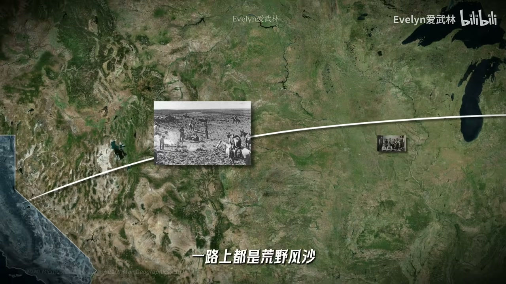
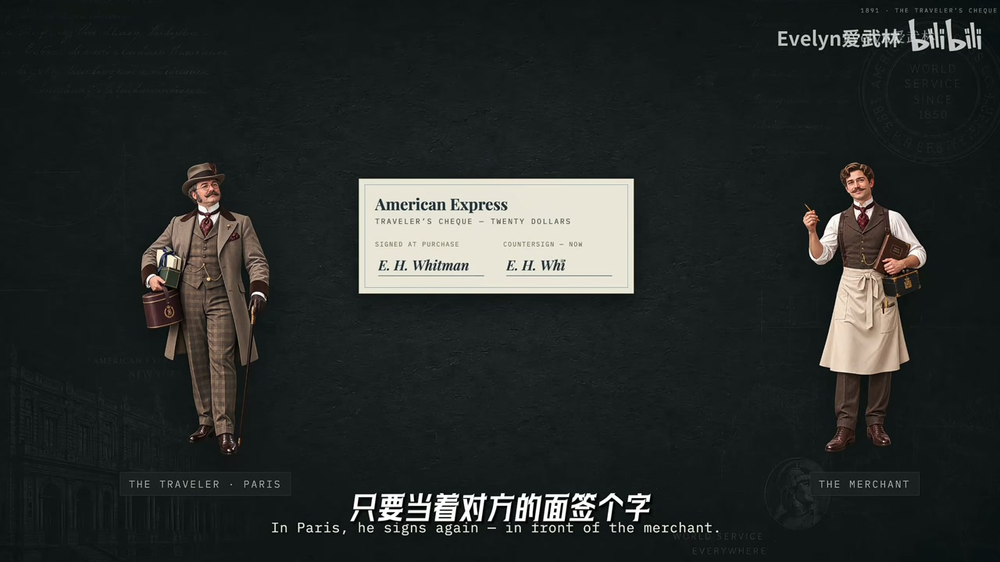
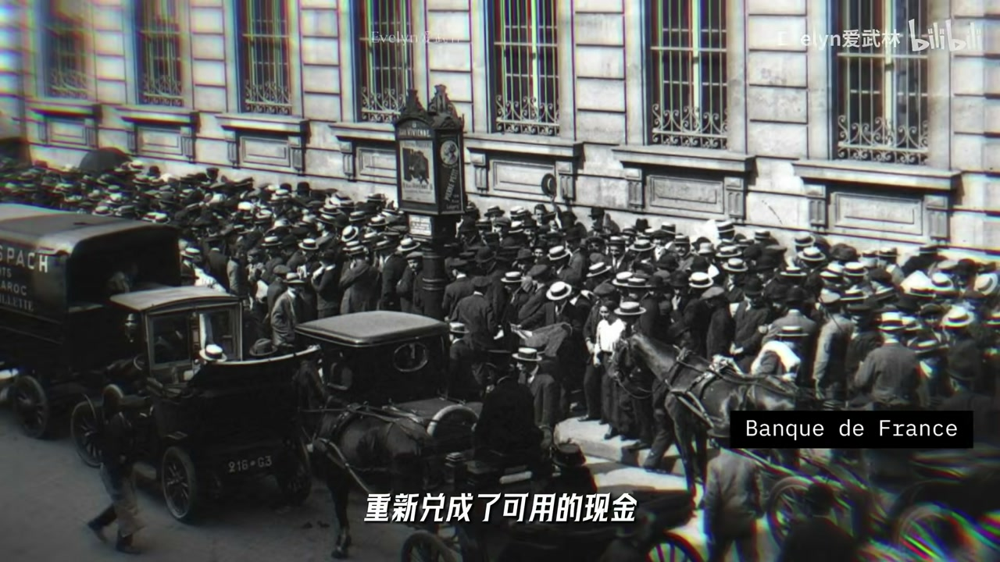
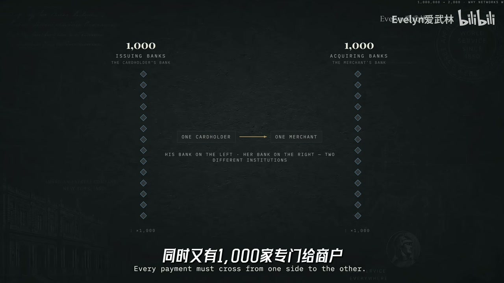

内容要点
无限额度黑卡曾是富豪圈谣言，1999 年运通顺水推舟做出来——商业史上少见「先有传说后有产品」。公司 1850 年合并自快递标局，Express 名副其实；后转向汇票与旅行支票，吃 float 沉淀资金。一战兑付危机确立「always delivers」；1958 年起绿卡/金卡/白金卡搭身份梯子。1963 色拉油仓储丑闻本可甩锅子公司，CEO 选择赔 6000 万保招牌，巴菲特观察终端刷卡未崩而重仓。闭环模式自兼发卡收单网络，商户费率可达约 3%；黑卡直接贡献可忽略，作用是光环广告，驱动白金卡会员费。
知识结构
先有传说；押运→汇票→旅行支票 float。
always delivers；塑料签账卡；赔信誉换巴菲特。
高费率吃客群；黑卡面子、会员费底子。
运通卖的是可兑现的信任与被筛选的消费力：闭环利润高因为历史遗产解决了冷启动；黑卡是品牌塔尖广告，真正印钞机是商户扣率+会员费飞轮。
00:00-05:40从谣言到标局：运钱比运货更赚钱
苏富比刷卡买鸡缸杯与名画的传说，衬托邀请制黑卡的稀缺；入会费/年费高昂且无预设额度。黑卡最初根本不存在，是八九十年代谣言，1999 年公司顺势产品化。
1850 年西部淘金时代，三家快递公司合并成美国运通——武装押运金银的标局。管理层发现运一信封证券胜过运整车货，1882 汇票、1891 旅行支票吃 float：顾客钱趴账上可配置，部分永不兑付。


05:40-12:50危机塑造信用：兑付、卡阶梯与色拉油
一战政府整合快递迫使运通转型金融；1914 欧洲混乱时坚持兑付旅行支票，留下 always delivers。1958 发第一张卡，年费故意比大莱贵 1 美元买「更体面」；紫纸卡改塑料凸字，再铺绿/金/白金邀请制梯子，让人仰望看不见的顶层。
1963 投机商用海水假色拉油骗仓储证明贷款，运通面临天价索赔。CEO 拒绝躲在子公司破产盾后，赔约 6000 万保百年招牌；巴菲特观察牛排馆刷卡未停，认定信用护城河，重仓后股价翻倍。

12:50-20:46闭环扣率、会员制与黑卡面子
运通主打签账卡须全额还款；收入一半以上来自商户扣率（可至约 3%），高于 Visa/MC 过路费模式。四方模式修路收过路费；运通闭环自兼发卡收单网络——冷启动靠旅行支票时代的高端商户与富人客户遗产。
持卡人年均消费约三倍，商户不敢拒收。会员费逻辑像 Costco：交费换福利，再用优质客群向商户收更高扣率。黑卡发卡极少、直接营收可忽略，却是光环广告，驱动白金卡等会员费；面子会褪色，对手已卷金属卡与休息室。

完整转录（620段）
以下文本由 Whisper 自动转录，可能存在识别误差；正文与导语已按语境校正专名与术语。
用这张卡
你能买几个亿的艺术品
但是
你再有钱也不能申请
你只能等他来
邀请你
这张卡
属于那1%里的
1%
2014年的香港苏富比
有人用这张卡刷24次
买下了2.8亿港币的明代鸡缸杯
然后拿它
喝了口茶
一年多后的纽约还是这张卡
刷了一副1.7亿美元的名画
这顺手攒下的鸡缸
都够在纽约和伦敦之间
飞上100趟头等舱
那么
拥有它的代价呢
请先交1万美元的入会费
和每年5千美元的年费
那到底是什么公司
敢开出一张没有预设额度的卡
而这张无所不能的黑卡
最初根本就不存在
它是一个谣言
上世纪八九十年代
欧美富豪圈私下流传
有这么一张
天空才是极限的神秘黑卡
据说盖茨有一张
王氏有几张
用它可以买私人飞机
就连华尔街日报
都煞有介事地做了报道
直到1999年
这家公司的高管们
看着越传越神的谣言
做了一个顺水推舟的决定
既然你们这么想要
那我们就把它做出来
于是
黑卡诞生了
先有传说 后有产品
商业史上仅此一例
那么是什么样的公司
能让全世界的富豪
为一个根本不存在的东西买单呢
这家公司叫
美国运通
American Express
你有可能不太熟悉它
但翻翻你的钱包
你可能早就拥有了它家的卡了
而这家金融巨头
在176年前
居然和金融没什么关系
它是一家在荒野里
武装押运黄金和各种值钱东西的
标局
1850年当时的美国
正经历一场疯狂的西部拓荒
无数人坐着一夜抱负的美梦
勇向加利福尼亚去逃金
但那个时候的美国西部呢
没有现代铁路和公路体系
金融服务也远未成熟
你要把挖到的黄金赚着大笔现金
跨越几千英里送回家
一路上都是荒野封杀
还有可能遇到劫匪
那怎么办呢
只能靠人
当时在纽约州
有三家往死里卷的快递公司
为了消除恶性竞争
这家公司的老板决定握手言和
合并成了一家新巨头
而这家新公司就是
美国运通
不知道大家有没有像我一样奇怪过
一家金融巨头
怎么不叫某某银行
而叫Express呢
这听起来分明就是个快递公司的名字
没错
因为这家公司一开始就是做物流的
那核心名称也就一直延用至今
那早期的美国运通
就是一个硬核的标局
他们雇佣最强悍的标师
赶着马车
甚至带着枪
在荒野里互送雇主的财物
在那个动荡的年代
公司早期的标志
甚至是一只时刻保持警惕的看门狗
好像在说
交给我
一定给你安全送到
那这种在刀鲜上填写的物流生意
运通干了几十年
直到有一天
管理层看着帐本有个惊奇的发现
费尽力气运一整车笨重的货物赚的钱
居然还不如帮银行运送一个小小的信封
这里面装的是股票凭证或者商业本票
运货可不如运钱
那既然我们已经掌握了安全
被大众信任的物流网络
咱们为什么不去运钱呢
于是在1882年
运通推出了防伪级别的汇票
用今天的话说
它有点类似于那个年代的银行转账
解决的是如何把钱安全地转给别人
那紧接着在1891年
运通又推出了让旅行更方便的东西
旅行支票
那如果说汇票是为了给别人汇款
那旅行支票解决的就是
如何把自己的钱安全地带到更远的地方
你想啊
在那个年代
你要是有很多钱出趟远门
拿着大箱子到处运多不安全呢
LV当时就出过带着防撬锁的硬顶旅行箱
专供有钱人放贵重物品
但这不是相当于把人傻钱多四个字写在脸上吗
这太招摇了是不是
而旅行支票的操作很简单
你在出国前
把现金交给运通
换回一本支票
那到了目的地
哪怕没有银行
只要当着对方的面签个字
核对了笔记
对方就会直接把它当成真金白银收下
甚至很多商家
还会用当地的货币直接给你找零
就在这张不起眼的纸里
藏着一个非常天才的机制
Float
福存金
试想一下
你在纽约交了钱
可能要几个星期
甚至几个月后
才会到伦敦或者巴黎把它花掉
那在这段时间里
你的钱就这么免费的躺在运通的账上
那运通可以拿着这笔无息资金
去做一定的资产配置
投资呀等等
简单的说就是用钱再去生钱
所以运货是不是不如运钱呢
运钱
你可以挤头赚
更妙的是
总有一部分旅行支票
因为丢失或者当旅行纪念品
永远不会被兑现
那这些长期无人兑付的钱
就能长期用来
钱生钱了不是
那这套手艺啊
今天到处都是
各种充值卡
预付卡
本质上玩的都是这个
但充的钱趴在他账上
也总有人充了
但永远不会花完
运通在100多年前
就已经在玩这套游戏了
而旅行支票在全球
商户端的大获成功
也为几十年后
运通那场颠覆整个支付行业的
终极转身
埋下了关键的伏笔
当然啊
这里我们先卖个关子
因为在那之前
命运给了运通一次
命悬一线的绝处逢生
1918年由于一战爆发
美国政府接管了铁路
并整合了全国的快递业务
运通也因此被迫
退出了经营近70年的老本行
开始全面转型成了一家金融公司
而在这种断崖式的危机中
之所以能转型成功
得益于四年前他自己
埋下的一颗种子
1914年一战爆发
欧洲金融与交通底细陷入混乱
许多银行限制兑付
约十多万美国旅客一度滞留
即使是美国的美国人
美国旅客一度滞留
即使腰缠万贯的富豪
也拿不出现金
连买一块面包的钱都没有
很多只能露宿街头
就在这个绝望的时刻
运通做了一个决定
照常兑付
他不仅继续兑付自家的旅行支票
还与多家金融机构联手
帮助受困的美国人
把部分汇票重新兑成了可用的现金
那这一举动
向世界证明了一件事
American Express always delivers
它从不来着
时间来到了1958年
美国运通正式发行的第一张卡
当时这种先消费后付款的卡
还是个新鲜事物
市面上最大的玩家是
Diner's Club 大莱俱乐部
一开始主要是为富人
在餐厅签单付款设计的
运通的定价很微妙
年费定在了6美元
这个价格恰好比竞争对手大莱卡
贵了1美元
这运通是故意的
这多出来的1美元
买的不是任何实质性的功能
而是更体面 更精英
那这张卡从诞生的第一天起
定位就是精英通行证
但实际上
即便运通当时已经通过旅行支票
拥有了庞大的商户网络
这张卡从推出到营里
还是经过了数年的磨合期
因为大家不了解这个新玩意儿
用户不用 商户就不敢接
那商户不接
用户就更不敢用
这是个典型的
鸡生蛋 蛋生鸡的问题
那你肯定奇怪
我为啥突然讲这个
记住这个知识点
咱们之后还要用
初代运通卡
其实是一张紫色的纸质卡
大家都怕放在钱包里
字慢慢就磨霉了
那为了解决这个问题
运通在第二年
把纸卡升级为
凸字塑料签账卡
那要知道
塑料卡在当年
可还没几家公司有呢
紧接着
运通开始搭建他的产品梯子
1959年有了绿卡
1966年推出了金卡
一直到1984年
推出了最初
必须凭邀请才能办理的白金卡
绿卡之上是金卡
金卡之上是白金卡
当一层比一层高的梯子
被精心设计好之后
人们自然会忍不住抬头看
那这座梯子的最顶端
是不是还有一层
看不见的
专门给极少数人的特权呢
回头看这100年
汇票 旅行支票 信用卡
美国人怎么花钱的三次升级
全都有运通的影子
他不是赶上了美国的消费社会
他是给美国的消费社会修了路
直到1963年运通又一次迎来了
他的至暗时刻
这也是他100多年历史上
最荒诞的一次危机
他竟然差点栽在了那几罐
掺了海水的色拉油上
1963年新泽西州有个大宗商品投机商
名叫迪安吉利斯
他的片数其实非常拙劣
他租下了巨大的储油罐
声称装满了色拉油
但储油罐下面其实全是海水
只有最上面飘着一层真油
那检察员来了
他就靠管道把那层油
抽到正在检查的罐子里
就这么个破绽摆出的把戏
因为检察员的严重失职
顺利拿到了运通官方的仓储证明
那盖上了运通的章
就获得了极强的华尔街信用
那许多机构甚至忽视了
库存规模早已经不合常理
那凭这些假资产
他成功地从几十家银行
骗走了1.5亿美元的贷款
跑去炒大豆油期货
那直到大豆油价格急跌
安吉利斯交不上保证金
而爆仓破产
骗局才彻底败露了
那华尔街大地震
运通面临着天价的连带索赔
股价瞬间腰斩
那几乎所有人都觉得
运通这次要完了
那事实上惹祸的是运通的一家子公司
母公司完全可以让它破产
躲在法人屏照后一分不赔
但时任CEO克拉克明白
如果赖账了
那谁还会再相信
印有美国运通标志的东西呢
于是他做了一个震惊市场的决定
为了这块百年招牌
我们赔
那运通最终拿出了6000万美元的赔偿
也成为了当时最昂贵的一次道歉
也就在整个华尔街对运通避之不及的时候
有一个33岁的年轻人看到了机会
他不看报纸上的恐慌新闻
反而跑到牛排馆的收银台旁边待了一晚
仔细观察
大家都是怎么结账的
他发现
虽然华尔街把运通骂得狗血连头
但普通消费者依然在毫无变化地刷着运通的信用卡
为什么
因为消费者
并没有把色拉有丑闻等同于运通的失信
他们知道
这是一家无论如何
都会兑现承诺的公司
百年的信誉
并未在终端消费市场崩盘
美国的信用卡
信用卡不是问题
我的美国的信用卡
是我的安全币
美国的信用卡
就像在会议上的赢家一样
那更关键的是
这个年轻人对运通管理层
把品牌声誉
置于短期财务损失之上的赔款决定
大家赞赏
他认定
这种对信用的极致捍卫
恰恰证明了他不可动摇的护臣盒
那看到了这一层
这位33岁的年轻人
先后押上了基金4成的资金
投资运通的股票
那两年后
运通股价涨超两倍
这个年轻人声名雀起
运通也成为了他此后大半生的核心池仓
而这个年轻人就是巴菲特
那现在让我们再回顾一下这两次危机
一次是被迫推出主业
一次是为子公司的失误赔款6000万
运通历史上最关键的时刻
全是在经历巨大的损失
但恰恰是这些时刻
练成了一家永远兑现承诺的金融帝国
而对信任两个字的维护
使短期的损失
长期数百倍
千倍地赚了回来
就像那6000万
短期看是赔款
长期看是一笔高效的信用宣传
不是吗
随着百年生育的积累
人们逐渐替他编出了一个无限额度
无所不能的黑卡神话
说到底
运通是在做一个把信任变现的生意
那么这家卖了百年信誉的公司
到底和你叔叔的Visa MasterCard
有什么不同呢
你以为信用卡公司都盼着你分期
好赚你的高利息吗
运通不一样
你想分期
他可能还不让呢
因为他主要做的是
签账卡
你每个月必须全额还清
这就是签账卡和信用卡的不同
当然运通现在也打开了赚利息的閥门
但这并非他最大的收入来源
那最大的收入是什么呢
就是占了总收入一半以上的
从商户收的钱
你每刷一笔
商家就要向运通交最高可达3%的手续费
那这个费率高于行业1.5%到2%的平均水平
而这个手续费
大部分运通自己得
那为什么他的商业模式可以这么霸道啊
这就涉及到运通和咱们熟知的Visa
和MasterCard最本质的区别
那视频前的你会不会觉得
Visa和MasterCard就是信用卡啊
那现在翻开你的钱包
你这卡好像都是刻着这两个公司的名字
我相信很多人都有这个误解
他们两个实际上只是信用卡背后这一套
基础设施的中间商
咱们回到60年代
那个时候美国银行
跨州社分行受到近乎全面的法律限制
全美国散落着1.4万家地方小银行
那假设有1000家银行发行的信用卡
同时又有1000家专门给商户装pose机的收单银行
就好比信用卡是工商银行发的
那商户的收款机是中国银行发的
这两者之间可不是自动相连的
如果一张卡要在全国流通
没有任何中间商的话
这1000家发卡行必须和这1000家收单行
两两之间建立通信专线
那1000×1000就是整整100万条线啊
那在那个没有互联网的年代
这在技术和法律上基本都难以实现
那这时候有个组织站了出来
他建了一个超级中心机房
你们不用发愁了
全部连到我这里来
于是原本可能要100万条才能解决的混乱
变成了简单的加法
打通了全国的支付网络
这个在1970年开始搭建的超级枢纽
就是后来的Visa
那看懂了这个超级枢纽你就明白
Visa和MasterCard四方模式
他们不发卡
不承担持卡人的信用风险
主要连接发卡方与收单方
做一个提供数据通道的科技公司
也就是修路
然后收个过路费
所以当你拿着一张Visa卡
在餐厅刷了100块钱
那餐厅老板交了两块钱手续费里
给你发卡的银行拿走大头
因为他要承担你的赖账风险
那帮餐厅装机器的收单行
赚走一点运维的辛苦钱
而Visa本身只拿走微博的过路费
但美国运通玩的是罕见的闭环模式
他不仅自己修路
还在路上设收费站
那发卡行是他
收单行是他
支付网络还是他
那当你刷卡时
商家交出了3%的手续费
大部分就落到了运通的口袋里
那资金和数据
就在他自己的生态系统里流转
那这么霸道的闭环利润这么高
就引出了我们前面埋下的那个钩子
既然这么赚钱
为什么极少一个银行
能建一个自己的闭环网络呢
因为要建一个全新的闭环
有一个绕不开的问题
鸡生蛋 蛋生鸡的问题
那商户会问你
没有人拿你的卡
我为什么要花钱升级系统
来接入你的网络啊
那消费者会问你
没几个商家支持刷你的卡
我为什么要办呢
那两头都是零的时候
谁先动呀
那这个冷启动
后来的很多银行都解不开
更经济的反而是用visa的网络
那为什么运通可以呢
因为1958年运通
发行第一张卡的时候
visa还没有出现
它根本没有现成成熟的银行卡网络可以连
而更重要的是
还记得运通在信用卡之前做的是什么吗
旅行支票啊
几十年来
为了让旅行支票在全球流通
运通早就和许多高级酒店
豪华餐厅航空公司
建立起了直接的结算关系
支持它能更快的建立商户网络
那数十年的旅行服务
让运通在富人圈中
积累了知名度和客户关系
为新卡带来了一批天然的启动用户
闭环网络也不是
运通特意想出来的商业模式
它实际上是运通一百多年的
强大历史遗产
也是其他银行很难去快速复制的
好 看到这里你奇不即快
既然运通手续费比同行都贵
那商家为什么还要交
就直接拒收运通的卡呗
因为运通对商户啊
完成了一场优质可原的反向要挟
那数据显示
运通持卡人的平均年销费额
是非持卡人的
约三倍
那拒绝运通
就等于把购买力最强的一群人拒之门外
那要做优质可原的生意
进入到这个生态
就要忍受更高的手续费
这就要引出运通
另外一大主要收入来源了
会员费
注意啊 在运通这里
他更愿意把这部分收入叫会员费
而不是年费
撕开金融的外衣
美国运通本质上很像金融界的Costco
逻辑高度相似
交会员费
才可以享受更好的福利
那这笔钱可不是一个小数目
快900美元的白金卡年费
甚至是15000美元的黑卡首年入场费
那为了对得起你交了这笔巨款
运通真的是在砸钱
给会员实实在在的回报啊
2025年运通的全年总营生
超过了700亿美元
其中基本盘
依然是向商户收取的过路费
那赚了这么多
花了多少呢
300多亿美元
就是用在会员服务积分返还
和各种会员福利上面了
那这就是运通的终极闭环
它不仅在发卡
更是在用每年数百亿的真金白银
富养着一批高质量的会员
运通在拿着这批被筛选出来的
优质客源名单
向商家收取更高的手续费
那有钱人交会费买身份
商家交手续费买客流
而运通坐在闭环的中间
名利双收
说到这儿你可能以为
开头那张黑卡是运动的印钞机
恰恰相反
黑卡发卡量极少
在运通700多亿的营收里
它的直接贡献
几乎可以忽略不计
那养着它干什么
因为黑卡自带光环
是运通非常成功的广告
购不着它的人
很有可能退而求其次
办一张近900美元的白金卡
所以
黑卡是面子
会员制才是底子
而面子这个东西是会褪色的
现在运通的对手们
都看透了它的打法
大通银行等等
都在发行高端金属卡
砸重金自建机场休息室
卷高端福利
竞争不可谓不激烈
同时随着科技的进步
大家获取资源的门槛降低
比如卖座的演唱会餐厅等等
传说中能买到一切的顶级礼宾簿
同样不可能无中生有
也要受到第三方库存的限制
你仔细看
黑卡那些被吹商天的顶级福利
实际体验感也并没有那么深
它更多是一个彰显身份的门面
自带一层让人仰望的光环
而当特权被同行批量复制
许多人交了年费就能进VIP室
所谓的高端也就不再高端了
那这家176年的老店熬过了一战
金融危机在100多年的时间里
用信任建立起了一条坚固的互成河
但在今天
当金属卡开始烂大街
当高端不再绝对稀缺
这家卖了百年信誉的金融帝国
它的下一个百年
又会迎来什么样的挑战呢